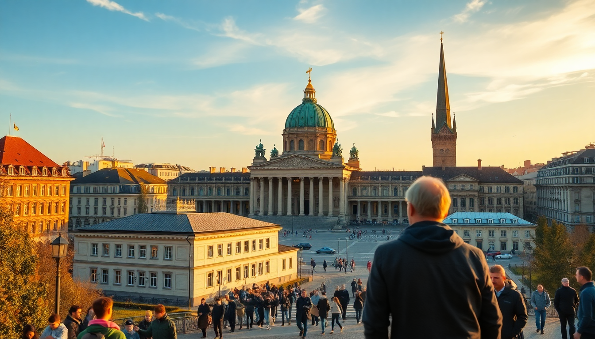

7 Days in Germany: Berlin, Munich & Frankfurt

I landed in Berlin with a vague plan and a suitcase that was too heavy. Seven days later, I’d crossed three cities, eaten my weight in pork knuckle, and learned that German efficiency applies to trains but not always to museum queues. This itinerary is what I actually did—tweaked for fewer headaches and more real meals.
Is seven days enough for Berlin, Munich, and Frankfurt?
Yes, but only if you move fast and keep your luggage light. I spent two full days in Berlin, two in Munich, and one in Frankfurt, with the rest eaten up by travel. That’s tight, but doable. The key is using the ICE trains between cities—they’re fast, reliable, and let you skip airport security. I booked my tickets on Deutsche Bahn’s app three weeks out and paid €40 for Berlin–Munich instead of €120 at the counter.
If I had to cut one city, it’d be Frankfurt. It’s fine for a layover, but Berlin and Munich have way more character.
What should I do with two days in Berlin?
Start in Mitte and don’t try to see everything. I made that mistake on day one and burned out by noon.
- Brandenburg Gate and Reichstag Building — walk between them in 10 minutes. Book the Reichstag dome visit online weeks ahead; I didn’t and regretted it.
- Museum Island — pick one museum. I chose the Pergamon Museum (the Ishtar Gate is worth the entry fee alone). Skip the Neues Museum unless you’re obsessed with Egyptian artifacts.
- East Side Gallery — the open-air mural section of the Berlin Wall. It’s touristy but free and quick.
- Kreuzberg neighborhood — go here for dinner. We ate at Markthalle Neun on a Thursday evening when they had street food vendors. Try the currywurst at Curry 36 if you want the classic Berlin snack.
I stayed at Hotel am Steinplatz in Charlottenburg. Quiet area, good breakfast, and a 10-minute U-Bahn ride to Mitte. For a cheaper option, the Generator Berlin Mitte hostel is loud but central.
How do I get from Berlin to Munich, and what’s worth seeing along the way?
Take the ICE train from Berlin Hauptbahnhof to Munich Hauptbahnhof. It’s about 4 hours direct. I booked a 7 a.m. departure and arrived by 11 a.m. with time to drop my bag and grab lunch.
If you have a spare half-day, stop in Nuremberg on the way. The train stops there anyway. Get off, stash your luggage in a locker at the station, and walk to the Nuremberg Castle and Hauptmarkt. The Historischer Kunstbunker (art bunker) tour is a hidden gem—Nazis hid paintings in a medieval tunnel system. I spent three hours there and felt it was worth the detour.
What’s the best way to see Munich in two days?
Munich feels smaller and more relaxed than Berlin. I focused on the old town and one day trip.
- Marienplatz — the central square. The Glockenspiel show at 11 a.m. and 12 p.m. is fine but crowded. I watched from the Ratskeller Munich restaurant balcony instead.
- Viktualienmarkt — a permanent food market two blocks from Marienplatz. Grab a Weisswurst and pretzel from the Giesinger Bräu stall. Eat standing at the counter like a local.
- English Garden — bigger than Central Park. I rented a bike from Mike’s Bike Tours for €20 and rode to the Chinesischer Turm beer garden. The surfers on the Eisbach wave are a real thing—worth 10 minutes of watching.
- Hofbräuhaus — go for the experience, not the food. It’s a tourist circus, but the beer hall atmosphere is genuine. I had a liter of dark beer and a plate of Schweinshaxe (pork knuckle) and didn’t regret it.
For a day trip, I took the S-Bahn to Dachau Concentration Camp Memorial. It’s 30 minutes from Munich Hauptbahnhof. The site is free, but the audio guide (€4) is essential. It’s sobering and important—block out at least 4 hours including travel.
I slept at Hotel Bavaria near the Hauptbahnhof. Basic but clean, with a solid breakfast buffet. For a splurge, Hotel Vier Jahreszeiten Kempinski on Maximilianstrasse is worth it if you want old-world luxury.
Is Frankfurt worth visiting, or should I skip it?
Honestly, Frankfurt is a business city. I spent one night there and felt that was enough. But if you have a flight from Frankfurt Airport (many do), it’s a convenient stop.
- Römerberg — the reconstructed medieval square. Pretty but small. I walked through in 20 minutes.
- Main Tower — go up for the city view. It’s €10 and less crowded than the Maintower observation deck.
- Sachsenhausen neighborhood — this is where the locals go for Apfelwein (apple wine). I ate at Zum Gemalten Haus, a traditional tavern. The Handkäse mit Musik (marinated cheese with onions) is an acquired taste—try it once.
- Städel Museum — if you like art, this is the best thing in Frankfurt. I spent two hours on the Old Masters floor.
I stayed at Hotel Schopenhauer near the Hauptbahnhof. It’s budget-friendly and the rooms are small, but the staff pointed me to a great Döner spot around the corner.
What should I eat in Germany beyond the clichés?
Germany’s food scene is more than sausage and sauerkraut. Here’s what I actually enjoyed:
- Currywurst — Berlin’s street-food king. Curry 36 in Kreuzberg is the benchmark.
- Döner Kebab — invented in Berlin by Turkish immigrants. Mustafa’s Gemüse Kebap in Mitte has a long line but the veggie option is legit.
- Leberkäse — a Bavarian meatloaf served in a roll. Get it at Metzgerei (butcher shops) for under €3.
- Spätzle — egg noodles with cheese. I had a bowl at Tegernseer Tal in Munich and it was the best meal of the trip.
- Apfelstrudel — go to Café Einstein in Berlin for the version with vanilla sauce.
FAQ
How much should I budget for a 7-day Germany trip? I spent about €1,200 per person, not including flights. That covered mid-range hotels, two ICE train tickets, meals at sit-down restaurants, and entry fees for museums and tours. Budget travelers can do it for €800 by staying in hostels and eating at bakeries and street stalls.
Is the Germany Rail Pass worth it? Only if you’re taking three or more long-distance trains. I bought point-to-point tickets for Berlin–Munich and Munich–Frankfurt for €90 total. The German Rail Pass (€200 for 4 travel days) would have been overkill. Use Deutsche Bahn’s Sparpreis (saver fares) and book early.
Do I need to speak German to get around? No. Everyone in tourism and hospitality speaks English. But learning “Danke” and “Bitte” goes a long way. I also downloaded the DB Navigator app for train schedules and Google Maps offline for walking directions—both worked without a SIM card.
Conclusion
- Two days in Berlin — focus on Mitte and Kreuzberg; skip Museum Island overload.
- Two days in Munich — old town plus Dachau; eat at Viktualienmarkt and Tegernseer Tal.
- One day in Frankfurt — Römerberg, Main Tower, and Sachsenhausen for apple wine.
- Use ICE trains — book early for cheaper fares.
- Pack light — you’ll be moving every two days.